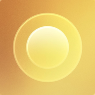

おすすめ・ショート非表示0%
YouTubeを準備しています
おすすめとショートを隠す準備ができたら、自動でYouTubeが開きます
拡張機能がオフになっているかもしれません
iPhoneの「設定」→「アプリ」→「Safari」→「機能拡張」→「おすすめ・ショート非表示」をオンにして、「youtube.com」を「許可」にしてください。
このままYouTubeを開く
おすすめ・ショート非表示おすすめとショートを隠す準備ができたら、自動でYouTubeが開きます
iPhoneの「設定」→「アプリ」→「Safari」→「機能拡張」→「おすすめ・ショート非表示」をオンにして、「youtube.com」を「許可」にしてください。
このままYouTubeを開く